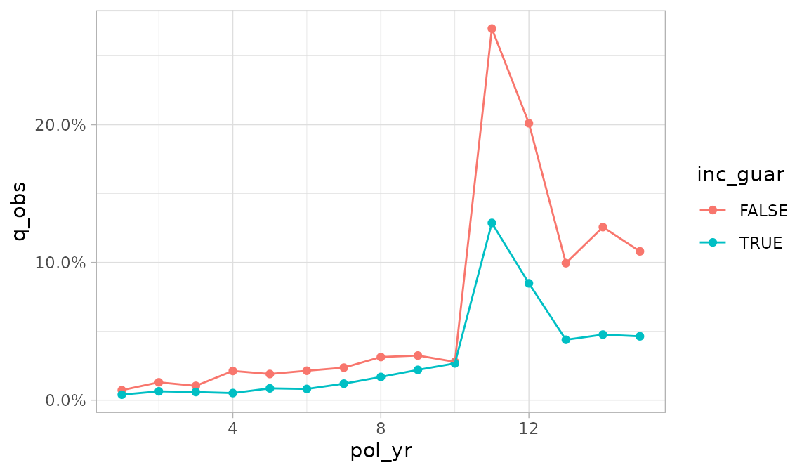
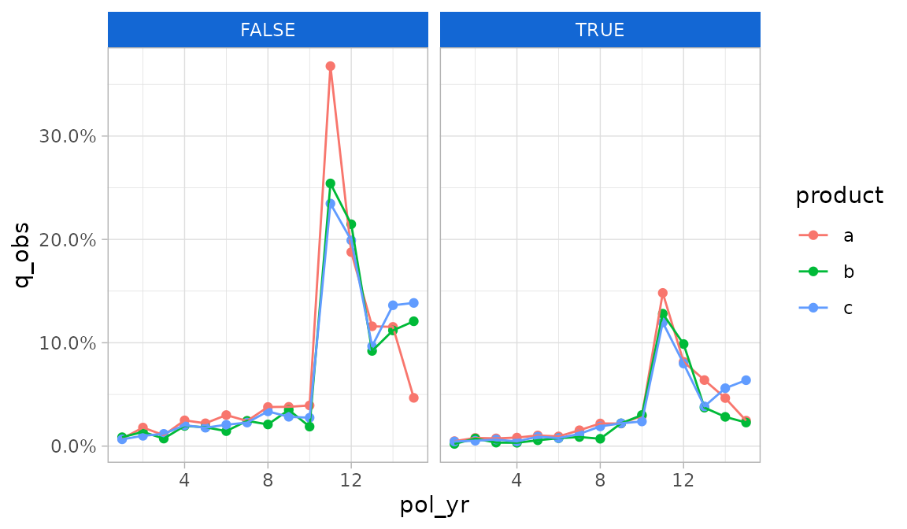
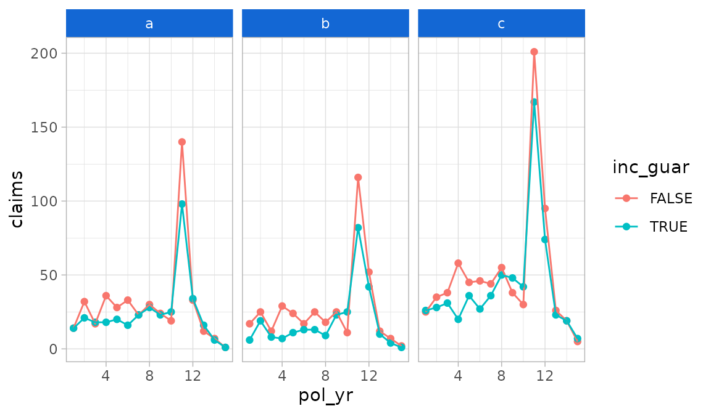
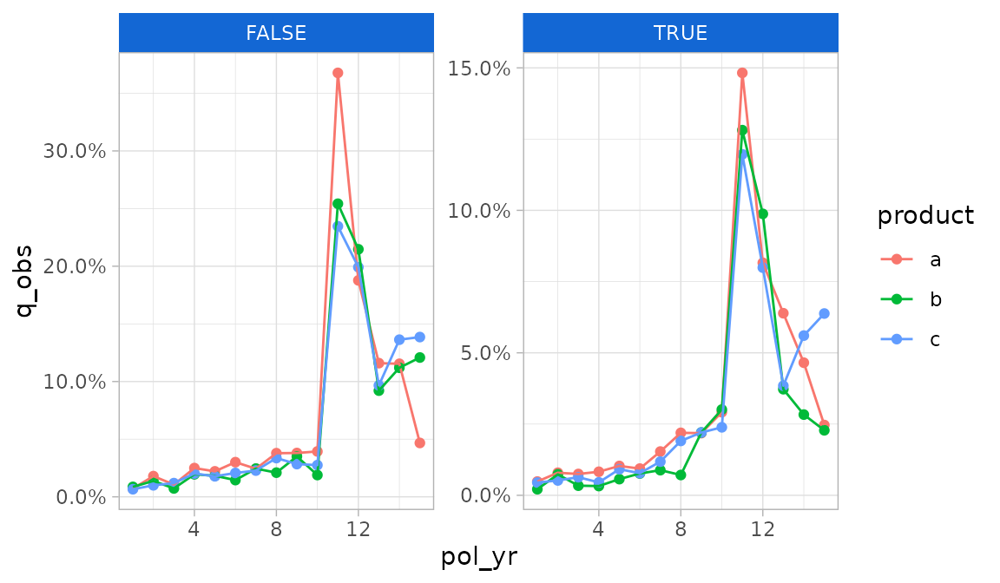
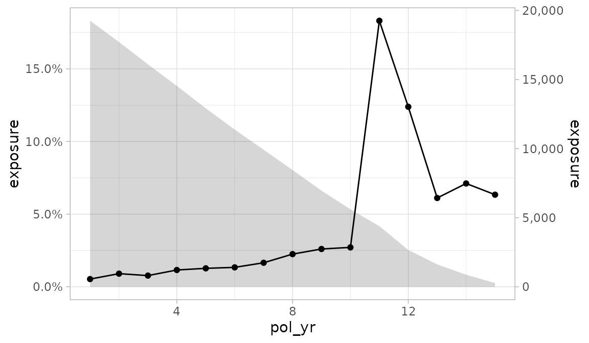
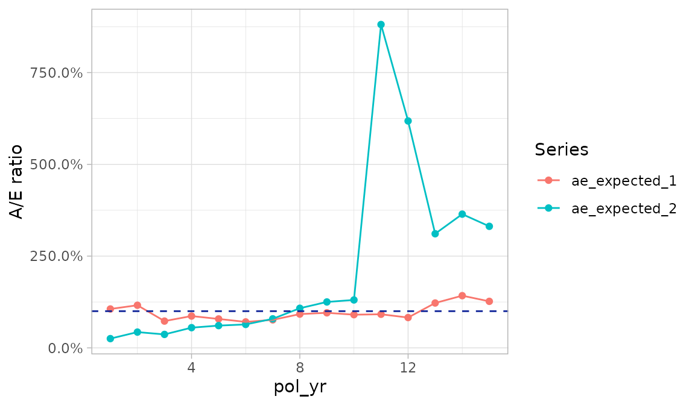
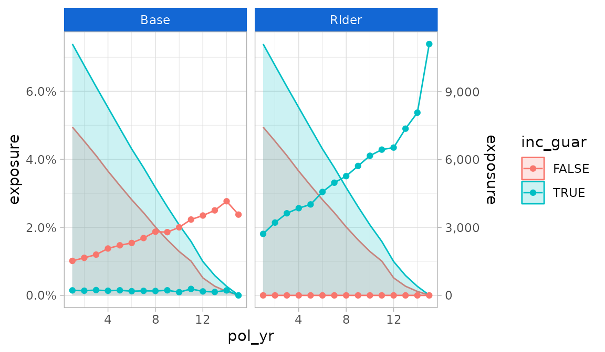
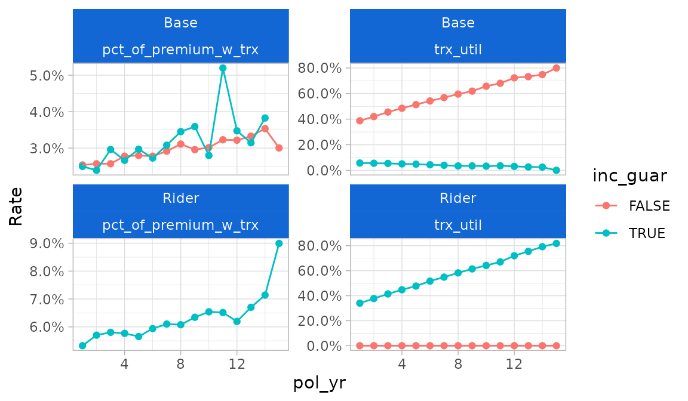

This article describes the data visualization functions available in the actxps package.
The
autoplot()function uses theggplot2package to create plots of termination study results (exp_dfobjects1) or transaction study results (trx_dfobjects2).-
Additional plotting functions create special plots that are not possible or difficult to produce using
autoplot().-
plot_termination_rates()produces plots of observed termination rates alongside expected termination rates. -
plot_actual_to_expected()draws a plot of all actual-to-expected termination rates. -
plot_utilization_rates()creates a side-by-side plot of transaction frequency and severity.
-
The
autotable()function uses thegtpackage to create HTML tables of termination study or transaction study results.The
exp_shiny()function launches a Shiny app that includes interactive filters, grouping variables, and data visualizations.
Plotting termination studies
Before we start plotting, we need to create experience study data.
The examples below use the simulated census_dat and
withdrawals data sets that come with the actxps package.
First, exposure records are created using expose(). Then,
illustrative expected values and withdrawal transactions are added to
the data.
library(actxps)
library(ggplot2)
# create exposure records
exposed_data <- expose(census_dat, end_date = "2019-12-31",
target_status = "Surrender")
# add expected values
expected_table <- c(seq(0.005, 0.03, length.out = 10), 0.2, 0.15, rep(0.05, 3))
exposed_data <- exposed_data |>
mutate(expected_1 = expected_table[pol_yr],
expected_2 = ifelse(exposed_data$inc_guar, 0.015, 0.03)) |>
# add transactions
add_transactions(withdrawals)
autoplot.exp_df
The actxps package provides an autoplot() method for
exp_df objects. Throughout this vignette, the method name
autoplot.exp_df() will be used to distinguish this method
from the generic autoplot() function.
Below, an exp_df object is created using
exp_stats().
The default plot produced by autoplot.exp_df() is a line
plot of the observed termination rate (q_obs). The
x variable corresponds to the first grouping variable of
the exp_df object3.
autoplot(exp_res)If there is a second grouping variable, it is mapped onto color.

Any additional grouping variables beyond two are used to create facets.

autoplot.exp_df() arguments
There are two ways of overriding the default aesthetics selected by
autoplot.exp_df().
- The
x,y,color, and...arguments can be passed unquoted column names or expressions to use as the x, y, color / fill, and faceting variables, respectively. - The
mappingargument can be passed an aesthetic mapping usingggplot2::aes(). If this argument is supplied, thex,y, andcolorarguments are ignored.
Let’s assume we want to plot the number of claims instead of the
termination rate, and we want inc_guar to be the color
variable instead of product.
Using the y, color, and ...
arguments, we could write:
autoplot(exp_res2, y = claims, color = inc_guar, product)
Alternatively, we could supply a mapping for more fine-grained
control. Note that the example below adds an additional mapping for
linetype which is otherwise unavailable under the defaults
for autoplot.exp_df().
autoplot(exp_res2,
mapping = aes(x = pol_yr, y = claims, color = inc_guar,
linetype = inc_guar),
product)The autoplot.exp_df() function defaults to percentages
for y-axis labels. As seen in the immediately preceding example, this
will not always be appropriate. The y_labels function can
be used to pass a different labeling function.
autoplot(exp_res2, y = claims, color = inc_guar, product,
y_labels = scales::label_comma(accuracy = 1))
To set axis scales that vary by subplot, use the scales
argument. This argument is subsequently forwarded to
ggplot2::facet_wrap(). Under the default value “fixed”,
scales are identical across subplots. If “free_y” is passed as shown
below, the y-scales will vary. If “free_x” is passed, the x-scales will
vary. If “free” is passed, both the x- and y-scales will vary.
autoplot(exp_res2, scales = "free_y")
The geoms argument can be used to change the plotting
geometry. Under the default value of “lines”, points and lines are
displayed. If “bars” is passed, a bar plot will be drawn.
autoplot(exp_res, geoms = "bars")If the y_log10 argument is set to TRUE, the
y-axis will be plotting on a logarithmic base ten scale.
autoplot(exp_res, y_log10 = TRUE)autoplot.exp_df() contains a handful of arguments for
plotting an additional variable on the y-axis. This variable defaults to
exposures and will always use an area geometry.
- To add a second y-axis, set
second_axistoTRUE. - The
second_yargument specifies which variable is plotted on the second y-axis. - The
second_y_labelsargument is used to change the labels on the second y-axis. Since exposures are the default second y-axis variable, labels are defaulted to a whole number comma format.
autoplot(exp_res, second_axis = TRUE)
plot_termination_rates()
A limitation of autoplot.exp_df() is that it doesn’t
allow one to plot observed termination rates alongside one or more
expected termination rates. This type of plot is common as an
alternative to actual-to-expected ratio plots.
The plot_termination_rates() function produces a plot of
the observed termination rates plus any expected termination rates that
were passed to the expected argument of
exp_stats().
In the example below, a new exp_df object is created
that contains two sets of expected surrender rates. This object is then
passed into plot_termination_rates().
exp_res3 <- exposed_data |>
group_by(pol_yr) |>
exp_stats(expected = c("expected_1", "expected_2"), credibility = TRUE)
plot_termination_rates(exp_res3)In the plot above, termination rates are mapped to the y
variable and the Series variable specifies a color scale.
Similar to autoplot.exp_df(), the x variable
is the first grouping variable (here, pol_yr).
If the exp_df object contains credibility-weighted
termination rates4, these rates can be included in the plot
using the argument include_cred_adj = TRUE.
plot_termination_rates(exp_res3, include_cred_adj = TRUE)
plot_actual_to_expected()
The plot_actual_to_expected() function is similar to
plot_termination_rates() except that all actual-to-expected
ratios are plotted on the y-axis instead.
plot_actual_to_expected(exp_res3)
Relationship of plot_termination_rates() and
plot_actual_to_expected() to
autoplot.exp_df()
Behind the scenes, plot_termination_rates() and
plot_actual_to_expected() call autoplot()
after reshaping the exp_df object. As such, all arguments
passed to autoplot.exp_df() described above can also be
passed to these functions. However, there is an exception: the
y variable is reserved and cannot be modified. In addition,
while the color variable can be overridden, this is
discouraged because it may result in odd-looking plots.
Since these functions automatically create a color variable, any
grouping variables beyond the first are used to create facets.
This differs from autoplot.exp_df() which uses grouping
variables beyond the second to create facets
Plotting transaction studies
The actxps package also provides an autoplot() method
for trx_df objects. The autoplot.trx_df()
method has the same arguments as autoplot.exp_df(), so all
options described in the previous section can be used for transaction
studies as well.
The y variable defaults to the observed transaction frequency
(trx_util). Like autoplot.exp_df(), any
numeric column can be mapped onto the y-axis using the y or
mapping arguments.
Under the defaults, autoplot.trx_df() handles grouping
variables the same as autoplot.exp_df():
- The first grouping variable is mapped onto
x - The second grouping variable is mapped onto color
- Any additional grouping variables are used to create subplots
In addition to the above, facets are also created for each transaction type found in the data.
trx_res <- exposed_data |>
group_by(pol_yr, inc_guar) |>
trx_stats(percent_of = "premium")
trx_res |>
autoplot(y = pct_of_premium_all, second_axis = TRUE)
plot_utilization_rates()
The plot_utilization_rates() function can be used to
create a side-by-side view of both transaction frequency and severity.
This type of plot is useful for answering questions like, “what
percentage of customers are taking withdrawals each quarter, and of
those taking withdrawals, what is the average percentage of account
value taken out?”.
Transaction frequency is represented by utilization rates
(trx_util). Severity is represented by transaction amounts
as a percentage of one or more other columns in the data. All severity
series begin with the prefix pct_of_ and end with the
suffix _w_trx. The suffix refers to the fact that the
denominator only includes records with non-zero transactions. Severity
series are automatically selected based on column names passed to the
percent_of argument in trx_stats(). If no
“percentage of” columns exist, this function will only plot utilization
rates.
Like plot_termination_rates() and
plot_actual_to_expected(), this function calls
autoplot() after reshaping the data. All arguments passed
to autoplot.trx_df() can be utilized by this function
except y and scales. The y
argument is reserved for utilization rates, and the scales
argument is preset to allow differing scales between the frequency and
severity subplots.
plot_utilization_rates(trx_res)
Tables
The autotable() function creates summary tables of
termination or transaction study results. This function is a generic
function with methods specific to exp_df and
trx_df objects.

Transaction study output example
Arguments:
fontsizeis a multiple that can be used to increase or decrease the font size. Values less than 100 decrease the font size, and values greater than 100 increase the font size.decimalscontrols the number of decimal places displayed for percentage columns (default = 1)-
If
colorfulisTRUE, conditional color formatting will be added to the table.- For termination studies,
color_q_obsandcolor_ae_specify the color palettes used for observed termination rates and actual-to-expected ratios, respectively. - For transaction studies,
color_utilandcolor_pct_ofspecify the color palettes used for utilization rates and “percentage of” columns, respectively.
These inputs must be strings referencing a discrete color palette available in the
paletteerpackage. Palettes must be in the form “package::palette”. For a full list of available palettes, seepaletteer::palettes_d_names. - For termination studies,
rename_colscan be used to relabel columns. This input must be a named list or character vector with names equal to original column names and values equal to the desired column labels. Most of the column names created byautotable()are presentation-ready, however, grouping variables on the left side of the table may require updates since they default to the variable names that appear in the data.
Interactive Shiny app
exp_shiny() is a powerful function that launches an
interactive Shiny app containing filters, grouping variables, plots
produced by autoplot(), tables produced by
autotable(), and a data export button. This function
requires an exposed_df object5.
The left sidebar of the app contains filtering widgets for all
variables passed to the predictors argument. If
predictors is not specified, all columns in the data except
policy numbers, statuses, termination dates, exposures, and transaction
columns will be used. The type of widget will vary depending on the data
type and number of unique values of each predictor.
In the “Study options” box, grouping variables and study type options
are shown. Grouping variables are used to specify aesthetic elements for
the plot and groups for the table output. The study type section will
always include a section for termination studies. If transactions are
attached to the exposed_df object6, an additional section
will be displayed for transaction studies.
- Termination study options include the ability to activate and
deactivate expected values and the selection of an optional numeric
weighting variable for exposures. Expected values are dictated by the
expectedargument. If this argument is not specified, any columns containing the word “expected” are assumed to be expected values. - Transaction study options include the ability to activate and deactivate transaction types, optional numeric columns to use in “percentage of” statistics, and an option to lump all transaction types into a single category.
The output section includes tabs for plots, tables, and exporting
data. The plot tab includes options for changing the plot’s
y-variable, adding a second axis, changing the geometry
type, adding a smoothing curve, and more.

Other arguments
-
distinct_max: an upper limit on the number of distinct values a variable is allowed to have to be included as a viable option for the color and facets grouping variables. Default = 25. -
title: an optional title for the app -
credibility,cred_p,cred_r: credibility options for termination studies. Seeexp_stats()for more information. Limited fluctuation credibility estimates at a 95% confidence within 5% of the theoretical mean assuming a binomial distribution are used as a default.